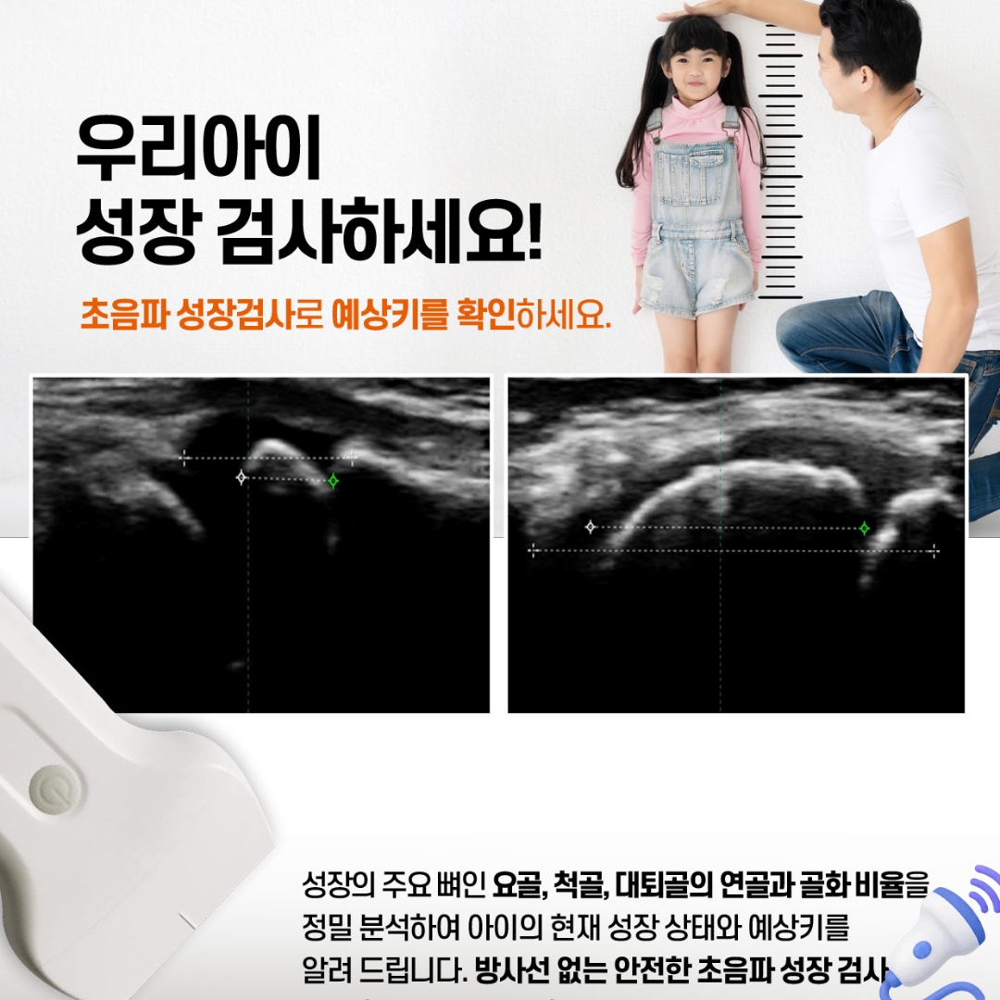

초음파 성장 검사와
맞춤 성장 상담
방사선을 사용하지 않는 초음파 성장 검사로 아이의 현재 성장 상태와 예상키를 확인하고, 나이와 성별에 맞춰 성장 치료를 상담합니다.

초음파 성장 검사 (RUF 방식)
방사선을 사용하지 않는 초음파 검사로 예상키를 확인합니다. 성장의 주요 뼈인 요골, 척골, 대퇴골의 연골과 골화 비율을 분석해 아이의 현재 성장 상태와 예상키를 안내해 드립니다.
요골
아래팔에서 엄지손가락 쪽에 있는 뼈입니다.
척골
아래팔에서 새끼손가락 쪽에 있는 뼈입니다.
대퇴골
허벅지에 있는 가장 큰 뼈입니다.
검사로 확인하는 것
- 세 뼈의 연골과 골화 비율로 본 현재 성장 상태
- 현재 상태를 바탕으로 한 예상키
- 방사선을 사용하지 않아 필요할 때 경과를 확인하기에 부담이 적은 검사
예상키는 검사 시점의 성장 상태를 바탕으로 한 추정치이며 확정된 결과가 아닙니다. 영양, 수면, 운동, 사춘기 진행 등에 따라 달라질 수 있습니다.
나이별 · 성별 성장 치료
아이의 나이와 성별, 성장 단계에 따라 아래 치료를 조합합니다.
성조숙증 지연
2차 성징이 일찍 나타나는 경우, 검사 결과를 바탕으로 진행 속도를 살피며 지연 방향의 치료를 상담합니다.
맞춤 한약
나이, 성별, 체질, 소화·수면 상태를 고려해 개인별로 한약을 구성합니다.
성장침
아이가 받아들일 수 있는 방식으로 성장과 관련된 혈위를 자극하는 침 치료입니다.
성장 추나
자세와 척추·골반 균형을 살피는 수기 치료로, 바른 자세 관리를 돕습니다.
여아 · 만 8세 미만
만 8세가 되기 전(8번째 생일 이전)에 유방이 발달하기 시작하면 성조숙증을 의심합니다. 이후 성장 속도, 뼈 나이, 초경 시기를 함께 살펴 상담합니다.
남아 · 만 9세 미만
만 9세가 되기 전(9번째 생일 이전)에 고환이 커지기 시작하면(고환 용적 4mL 이상) 성조숙증을 의심합니다. 겉으로 잘 드러나지 않아 놓치기 쉬워 성장 속도 변화를 함께 살펴봅니다.
※ 위 나이는 사춘기가 시작되는 시기에 대한 일반적인 기준(Marshall & Tanner, 1969)이며, 대한소아내분비학회 「2022 중추성 성조숙증 임상진료지침」에서도 같은 기준을 제시합니다. 정확한 진단은 진찰과 뼈 나이, 성호르몬 검사 등으로 이루어지며, 성조숙증이 의심되면 소아청소년과(소아내분비) 진료가 필요할 수 있습니다.
참고: Ann Pediatr Endocrinol Metab 2023;28(3):168-177.
진행 순서
- 1
상담
키·체중 기록, 가족력, 식사·수면·운동 습관을 확인합니다.
- 2
초음파 성장 검사
요골·척골·대퇴골의 연골과 골화 비율을 초음파로 분석합니다.
- 3
결과 상담
현재 성장 상태와 예상키, 나이·성별을 바탕으로 방향을 설명드립니다.
- 4
맞춤 치료
한약, 성장침, 성장 추나 중 필요한 치료를 조합합니다.
- 5
정기 확인
성장 속도와 컨디션을 주기적으로 확인합니다.
※ 치료 효과와 경과는 개인에 따라 다를 수 있습니다. 이 페이지는 일반적인 안내이며, 실제 치료는 진찰 후 개인별로 안내드립니다.
성장 관련 질문
초음파 성장 검사에도 방사선을 쓰나요?
초음파 검사는 방사선을 사용하지 않습니다. RUF 방식의 성장 검사는 요골, 척골, 대퇴골의 연골과 골화 비율을 분석해 아이의 현재 성장 상태와 예상키를 확인합니다. 예상키는 검사 시점의 상태를 바탕으로 한 추정치이며 성장 결과를 보장하는 것은 아닙니다.
성조숙증은 몇 살부터 의심하나요?
일반적으로 여아는 만 8세 미만에 유방이 발달하기 시작하거나, 남아는 만 9세 미만에 고환이 커지기 시작하면(고환 용적 4mL 이상) 성조숙증을 의심합니다. 대한소아내분비학회 2022 진료지침 등에서 제시하는 일반적인 기준이며, 정확한 진단은 진찰과 뼈 나이·성호르몬 검사 등으로 이루어집니다. 걱정되시면 상담을 받아 보세요.
궁금한 점은 편하게 문의해 주세요
진찰 후 상태에 맞는 방법을 설명드립니다.